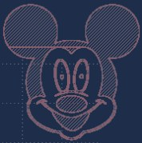
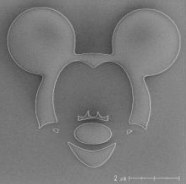
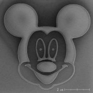
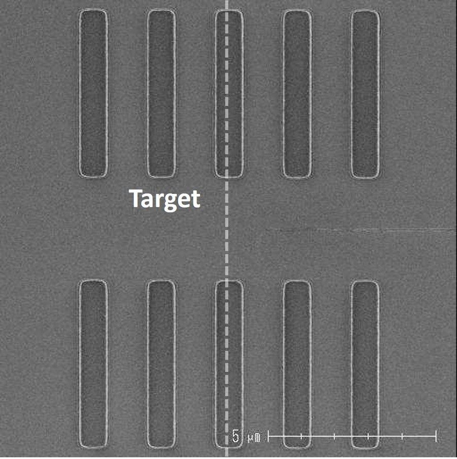
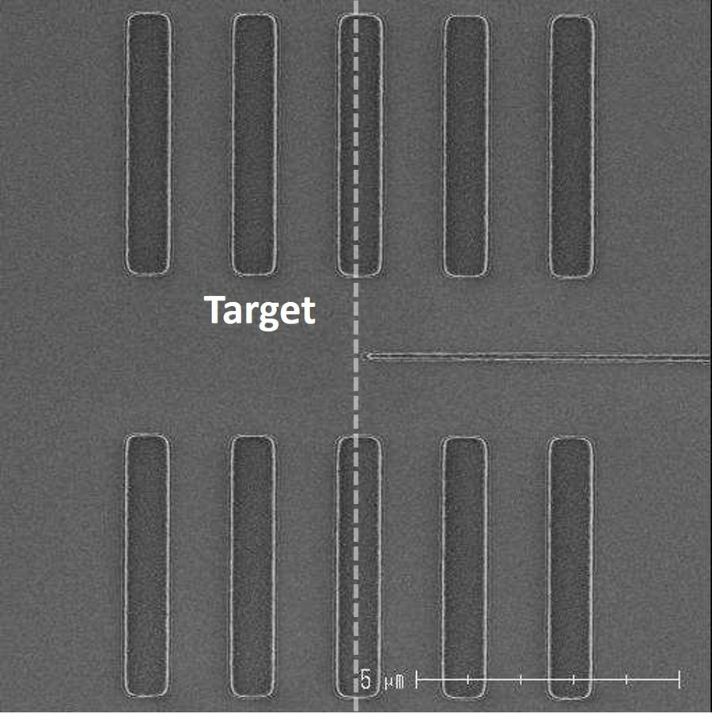
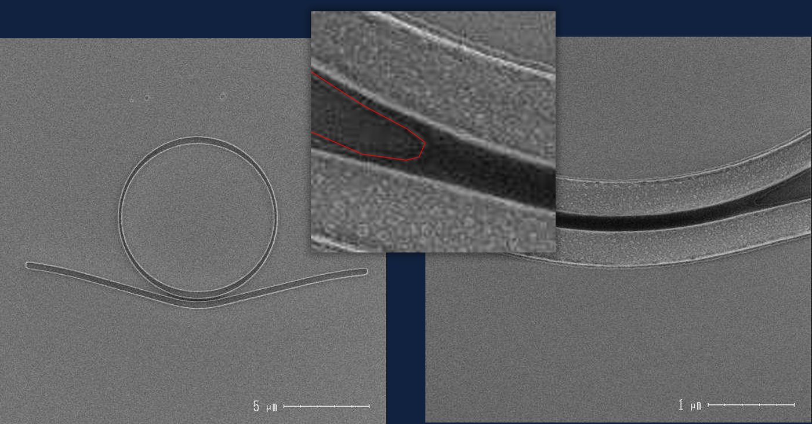
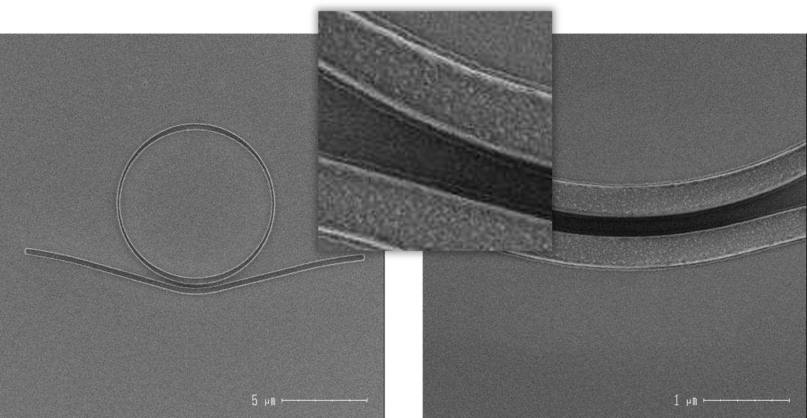
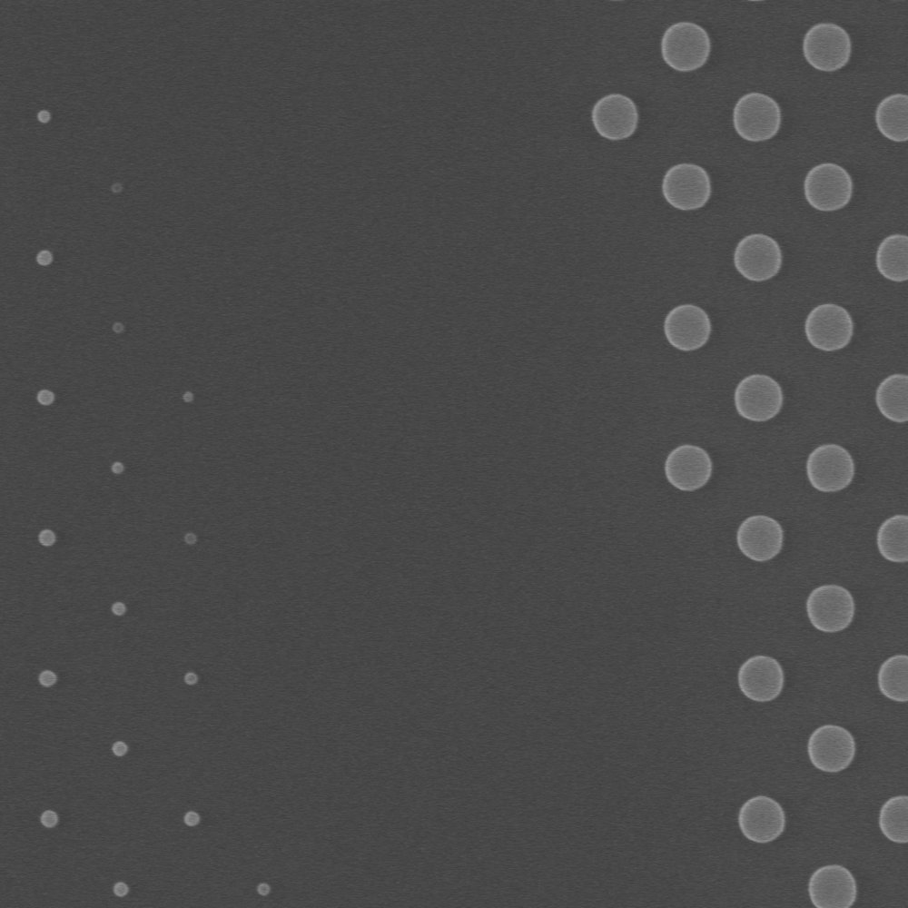
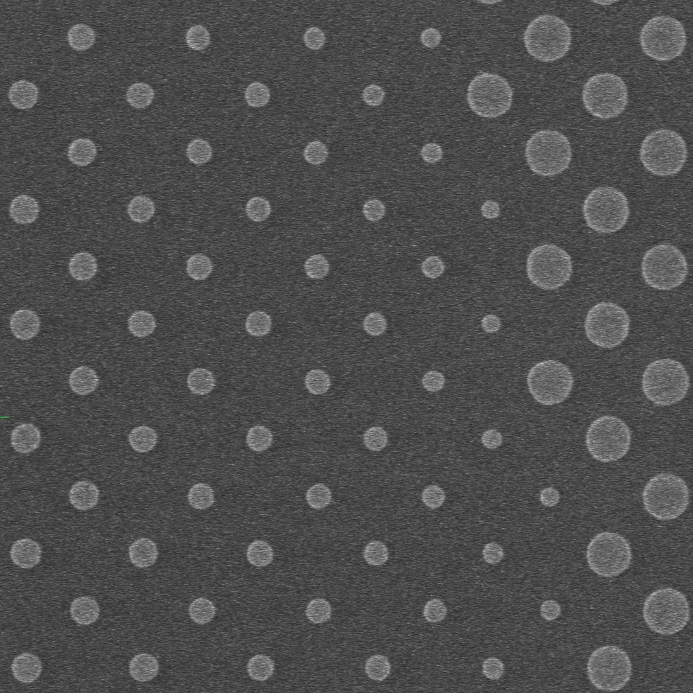

Why Mask Correction Matters
Chips and photonic devices are printed by projecting light through a patterned mask. Because the light's wavelength is comparable to the features being printed, diffraction distorts the result: corners round off, line widths drift, and the smallest features can vanish entirely. Optical Proximity Correction (OPC) pre-distorts the mask so the printed pattern matches the designer's intent.



Without correction (left) the printed wafer image loses detail; the pre-distorted OPC mask (right) restores the intended pattern.
Traditional OPC is slow
CPU-bound serial solvers take hours per job. OPC+ runs CUDA multi-stream parallelism on GPU clusters — 50× faster.
…expensive and exclusive
Commercial licenses and required expertise shut out startups and research labs. OPC+ is a web interface: upload, configure, submit.
…and Manhattan-only
Legacy tools force curved photonic designs into rectilinear approximations. OPC+ corrects freeform and curvilinear masks natively.
Fabricated Proof: SEM Before / After
These scanning electron microscope images show real devices fabricated with and without OPC+ correction — the difference is not simulated.
Line patterns — line-end shortening
Diffraction makes printed line ends recede inward, so lines come out shorter than designed. OPC extends the mask at line ends to restore the intended length.

Line ends visibly recede; printed length undershoots the target.

Line ends accurately reproduced; critical dimension restored.
Ring resonator — fatal defect eliminated
In photonic ring resonators the narrow coupling gap decides whether the device works at all. Without correction the gap fails to open — a fatal defect. With OPC+ the geometry prints cleanly.

Coupling region not opened — the device is non-functional.

Coupling region fully resolved — the device is functional.
Metalens — sub-wavelength features survive
A metalens is made of densely packed nano-structures whose exact shapes set the optical phase profile. Without correction the smallest features distort or disappear; with OPC+ every feature prints, preserving the lens function.

Critical nano-structures lost or severely distorted.

All sub-wavelength features fully resolved; phase profile preserved.
How It Works
Upload a GDS/OASIS layout, set your scanner parameters, and submit — the platform integrates three modules into one automated pipeline.
Mask Correction
Full-mask inverse lithography (ILT) with contour-based global optimization — higher pattern fidelity than rule-based edge correction.
Lithography Simulation
High-fidelity aerial image simulation for your scanner: wavelength, NA, resolution, and illumination source configuration.
Model Calibration
Imaging models fitted to your fab's CD-SEM measurements, capturing scanner, resist, and process variations.
Full technical documentation, comparison tables, and deployment options →
Recognition & Validation
🏆 2026 Future Tech Award
Awarded by Taiwan's National Science and Technology Council in the Semiconductor / Photonics / Communications category.
Industry & academic validation
Validated through collaborations with the Taiwan Semiconductor Research Institute (TSRI) and the University of Southampton, UK.
Joint development
Built by PAL Lab with the NYCU Network and System Laboratory (NSL); supported by the National Science and Technology Council.
Key Publications
Try OPC+ on your own design
Register on the platform for research or professional use — the interface supports English and Traditional Chinese.
Get Started at opc-cloud.com